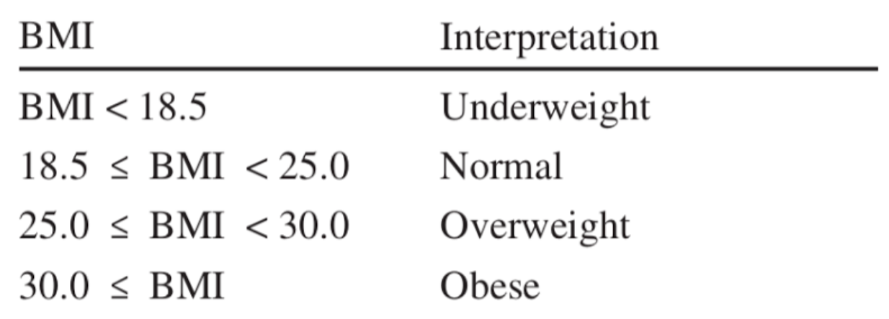

Chỉ số khối cơ thể (Body mass index-BMI) là một thước đo sức khoẻ dựa trên cân nặng và chiều cao. Nó được tính bằng cách lấy cân nặng đơn vị tính kilogam chia cho bình phương của chiều cao đơn vị tính mét. Công thức:
Chỉ số BMI đối với người trên 20 tuổi được phân loại và diễn giải theo bảng sau:
Chỉ số của bạn là:
Kết quả là: